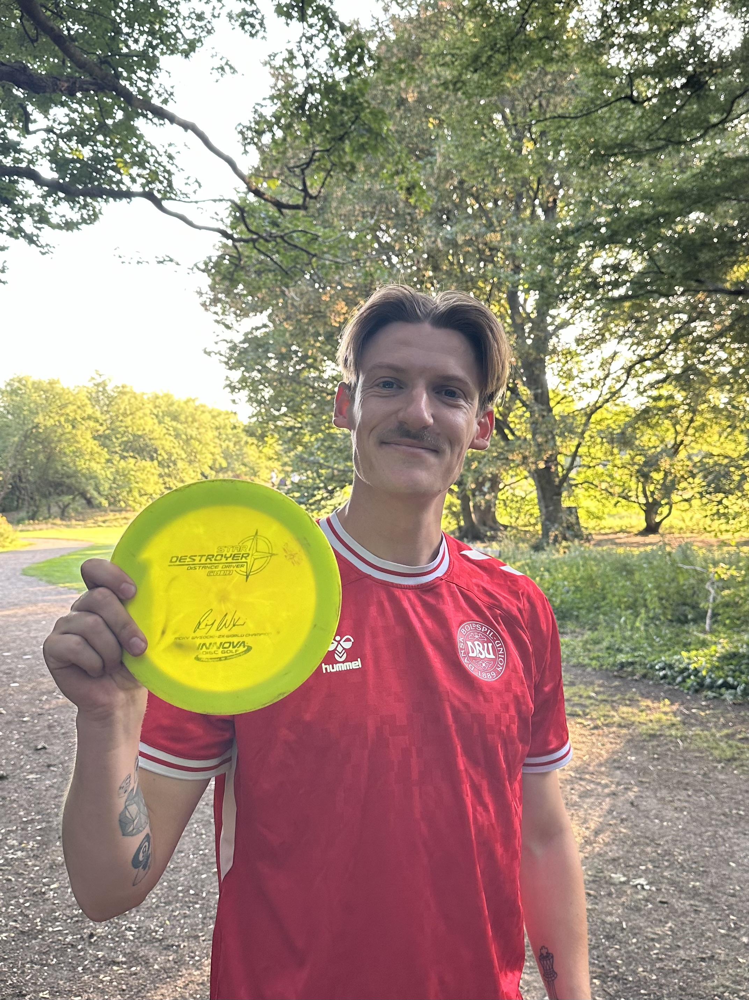
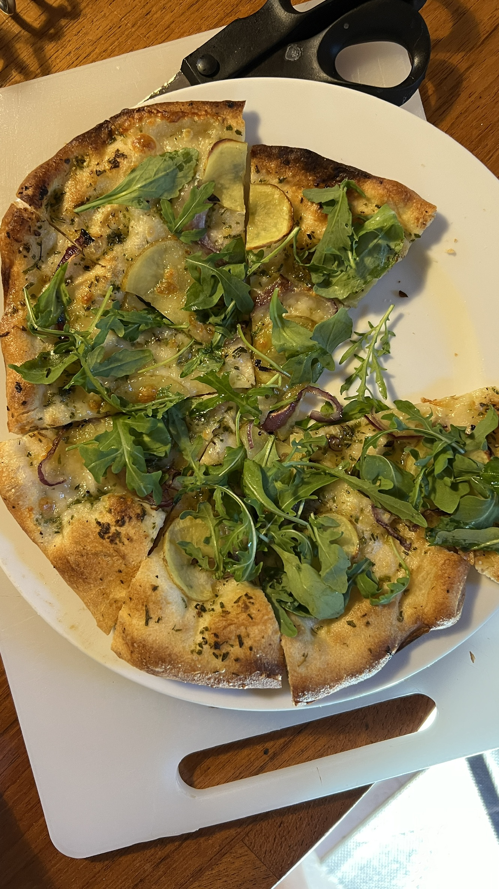

🕹️ Personal Interests & Life
💻 Tech
Servers, hardware, software tinkering.
🏃♂️ Fitness
Football, badminton, strength training.
🌍 Leisure
Running, travel, good food & culture.

Weekend football

Disc golf sessions

Neapolitan pizza experiments

Third-wave coffee